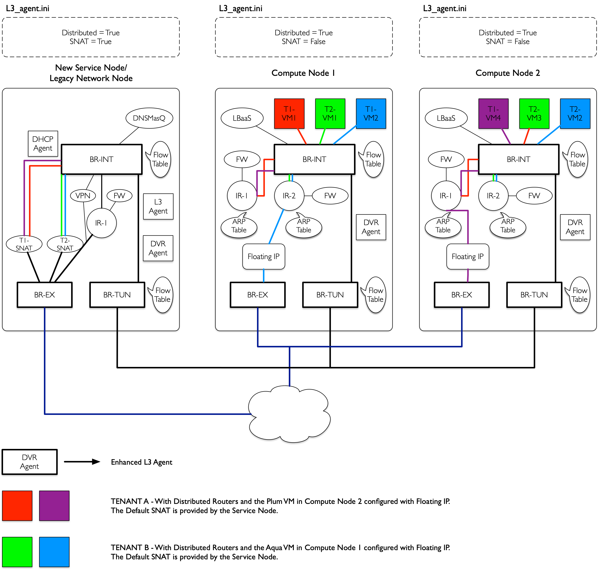
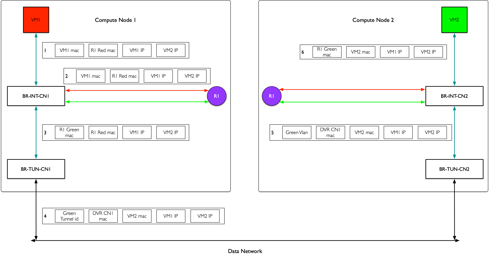
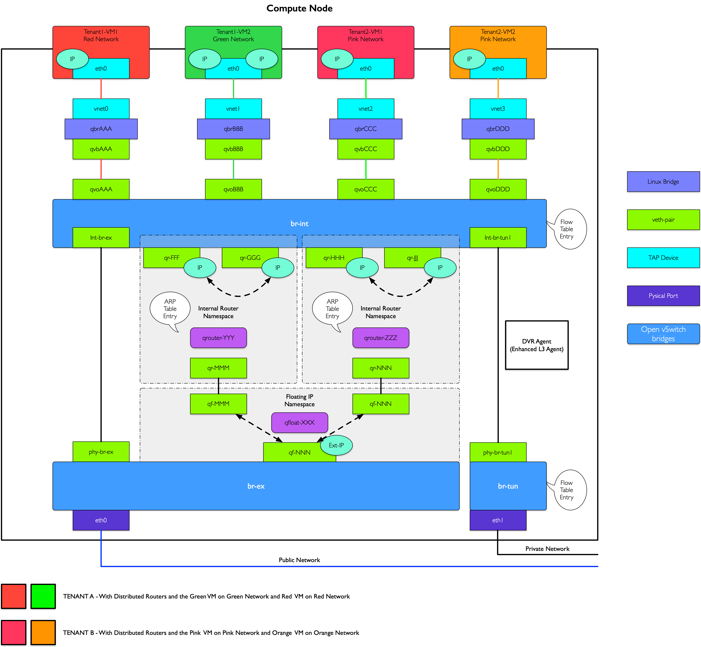
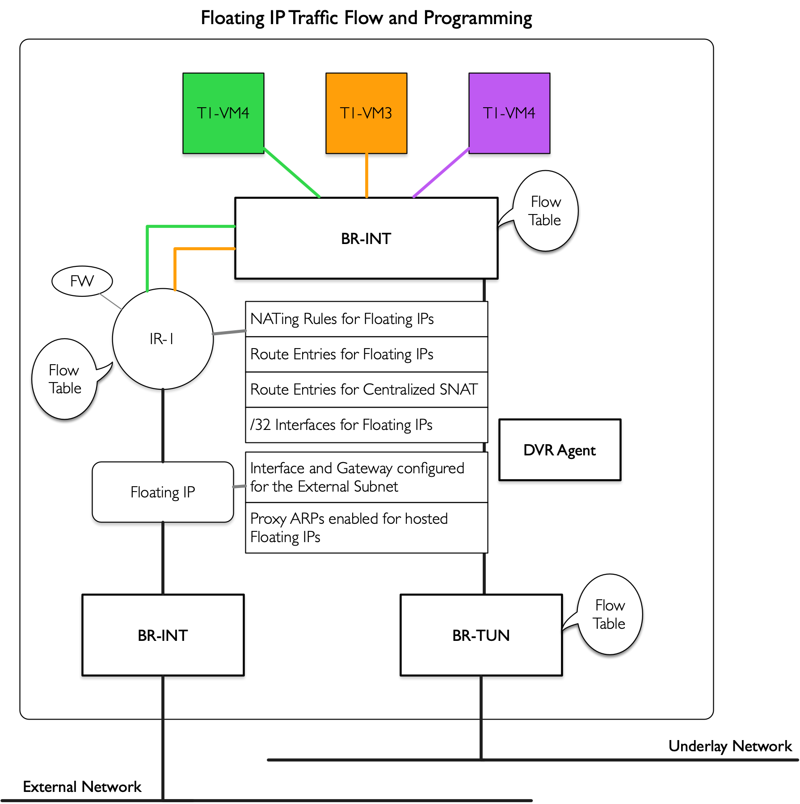

分布式路由
目录
OpenStack用户会发现，按照Neutron原先的设计，所有网络服务都在网络节点上进行，这意味着大量的流量和处理，给网络节点带来了很大的压力。这些处理的核心是路由器服务。任何需要跨子网的访问都需要路由器进行路由。
为了降低网络节点的负载，同时提高可扩展性，OpenStack自Juno版本开始正式引入了分布式路由（Distributed Virtual Router，DVR）特性（用户可以选择使用与否），来让计算节点自己来处理原先的大量的东西流量和非SNAT南北流量（有floating IP的vm和外面的通信）。
这样网络节点只需要处理一部分的SNAT（无floating IP的vm和外面的通信）流量，大大降低了负载和整个系统对网络节点的依赖。很自然的，FWaaS也可以放在计算节点上。
典型场景
从网络的访问看，涉及到路由服务的至少是需要跨子网的访问，又包括是否是同一机器、是否是涉及到外网（东西向vs南北向）。
| 方向 | 同一机器 | 不同机器 |
|---|---|---|
| 东西 | 本地网桥处理 | 本地东西路由器 |
| 南北 | 本地南北路由器floating转发 | 网络节点SNAT转发 |
东西向
东西向意味着租户同一个数据中心内不同子网之间的相互访问。
同一机器
对于同一主机的不同子网之间访问，路由器直接在br-int上转发即可，不需要经过外部网桥。
不同机器

如图所示，租户T1的两台虚机VM1（计算节点1）和VM4（计算节点2）分别属于不同的子网，位于不同的计算节点。
VM1要访问VM4，由计算节点1上的IR1起到路由器功能。返程的网包，则由计算节点2上的路由器IR2起作用。两个路由器的ID、内部接口、功能等其实都是一样的。即同一个路由器，但是实际上在多个计算节点上同时存在。
这里可能有人会想到，多台同样的路由器，如果都暴露在外部网络上，会出现冲突。例如当VM1的请求包离开计算节点1时，带的源mac是路由器目标接口的mac，而这个mac在计算节点2上的路由器上同样存在。
因此，需要拦截路由器对外的暴露信息。一个是让每个路由器只应答本机的mac请求；另一个是绝对不让带着路由器mac地址的包直接扔出去。实现在br-int上进行拦截，修改其源mac为tunnel端口的mac。同样的，计算节点2在br-int上拦截源mac为这个tunnel端口的mac，替换为正常的子网网关的mac，直接扔给目标虚拟机所在的主机。
南北向
无floating IP
这种情况（即SNAT）下，跟传统模式很类似。外部访问内部子网。
租户T2在外部，通过默认的SNAT网关访问内部子网的VM1。此时，网络节点上的T2-SNAT起到路由器的作用。
反过来，租户T2内部子网的VM1试图访问外部网络，则仍然经过网络节点上的T2-SNAT路由器。
有floating IP
这种情况下，计算节点上的专门负责的外部路由器将负责进行转发，即计算节点1上的IR2和计算节点2上的IR1。
网络节点
服务基本没变，除了L3服务需要配置为dvr_snat模式。
命名空间上会多一个专门的snat-xxx命名空间，处理来自计算节点的无floating IP的南北向流量。
计算节点
需要额外启用l3_agent（dvr模式），以及metadata agent。
其实，跟传统情况下的网络节点十分类似。每一个东西向路由器有自己的命名空间，负责跨子网的转发。另外，多一个floating路由器，专门负责经由floating地址的南北向转发。
东西流量

如上图所示，租户两个子网，红色和绿色，分别有VM1和VM2，位于节点CN1和CN2上。
VM1访问VM2的网包步骤如下，整个过程IP保持不变。
- 原始包，VM1访问VM2，目的mac为本地（红色子网）的路由器网关接口R1 Red mac。
- 经过BR-INT-CN1转发，该网包通过本地（红色子网）网关接口扔给本地路由器R1。
- R1根据路由规则，经过到绿色子网的接口发出，此时网包的源mac地址改为绿色子网的网关接口R1 Green mac，目的mac改为VM2 mac，并带上绿色子网的本地vlan tag。
- 网包发给BR-TUN-CN1进行Tunnel，扔出去之前，将源mac替换为跟节点相关的特定mac DVR CN1 mac，之后带着目标子网（绿色子网）的外部Tunnel id扔出去（实现可以为vlan、vxlan、gre等，功能都是一样的）。
- 节点CN2的网桥BR-TUN-CN2会从Tunnel收到这个包，解封包，并带上本地vlan tag，最终抵达网桥BR-INT-CN2。
- BR-INT-CN2上替换网包的源mac（此时为DVR-CN1-mac）为本地路由器的绿色子网网关接口，然后发给VM2。
南北流量

所不同的是，单独有一个qfloat-XXX路由器（也在一个独立命名空间中）来负责处理带有floating IP的南北向流量。

流表规则
为了实现上面描述的功能需要下面几种流表规则。
所有对网关的arp request不能出到外部网络
在tunnel网桥上看到的一律丢弃。
1 | DVR PROCESS Table 1 (New table for dvr): |
所有发往网关的包也不能出到外部网络
在tunnel网桥上看到的一律丢弃。
1 | DVR PROCESS Table 1 (New table for dvr): |
所有从路由器接口路由出去的包，需要修改源mac为特殊mac
在tunnel网桥上进行处理。
1 | DVR PROCESS Table 1 (New table for dvr): |
收到外部特殊源mac的包要修改为正确的路由器接口mac
在intergration网桥上进行处理。
1 | Table 0:(Local switching table) |
其他
采用L2 pre-population技术，提前把相关计算节点的地址关系放到本地的FDB表中，减少外部广播。
在integration网桥上，采用组表来调整规则顺序等。
1 | Table 1:(DVR_TO_LOCALMAC table) |
注意事项
配置
要启动DVR，比较简单，分别在各个节点的网络配置文件上做如下修改或添加。
Neutron Server
/etc/neutron/neutron.conf
1 | router_distributed = True |
L3 Agent
/etc/neutron/l3_agent.ini
1 | agent_mode = [dvr_snat | dvr | legacy ] |
网络节点上配置为dvr_snat，计算节点上配置为dvr。
L2 Agent
/etc/neutron/plugins/ml2/ml2_conf.ini
1 | mechanism_drivers = openvswitch, linuxbridge, l2population |